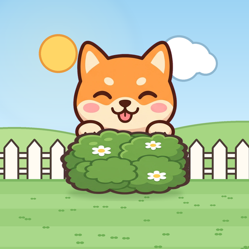

Pupsweeper
Short version: Pupsweeper has no accounts of its own. It saves your progress on your device and, if you are signed in to Google Play Games, also in Google Play Games Saved Games in your own Google account. It shows ads through Google AdMob and offers optional in-app purchases (remove ads forever, unlimited hearts forever, and packs of continue tickets) through Google Play Billing. It uses Google Firebase for play statistics and crash reports (section 3). We run no servers of our own.
1. Who we are
Pupsweeper (package com.sniffypups.game) is a single-player puzzle game made by Biseo Studio. Contact: efdou100@gmail.com.
2. Information collected by advertising (Google AdMob)
The game uses the Google Mobile Ads SDK to show banner ads and ads between stages (from stage 11), and optional rewarded videos that you choose to watch (an extra heart or an extra Sniff hint). The SDK may collect and share with Google: the device advertising ID and app set ID, approximate location derived from your IP address, ad interactions, and diagnostic/crash data. This is used to show and measure ads, prevent fraud, and for analytics. See How Google uses information from sites or apps that use its services.
In the EEA, UK and Switzerland you are asked for consent before personalised ads, and you can change your choice any time in Settings › Privacy choices. You can reset or delete your advertising ID in your device settings. Ad content is limited to a general (PG) rating.
3. Play statistics and crash reports (Google Firebase)
To see where the game is too hard or confusing and to fix crashes, the app uses Google Analytics for Firebase and Firebase Crashlytics (operated by Google as our service provider). They collect: how you use the game (stages started, cleared, lost or left, with time taken, mistakes, Sniff hints and continues used; check-in, daily puzzle, tutorial and leaderboard taps; which ad reward was chosen and when an ad between stages was shown; which product was bought — never payment details), the screens viewed, an app instance ID, device model, OS and app version, language and country, and crash and error reports (stack traces, the stage being played). Firebase may also use the advertising ID (see section 2); the app tells Analytics not to use this data for ads or ad personalisation. In the EEA, UK and Switzerland, analytics storage follows the consent choice you make for ads. We see these only as statistics and crash reports in the Firebase console, not linked to your name or account. Google keeps Analytics data for up to 14 months and Crashlytics reports for 90 days. See Privacy and Security in Firebase.
4. In-app purchases (Google Play Billing)
You can optionally buy: Remove ads forever (a one-time purchase) to turn off banner ads and ads between stages, and continue without a video when you run out of hearts; Unlimited hearts forever (a one-time purchase) so wrong taps no longer cost hearts; and packs of 5 or 20 continue tickets (consumable purchases you can buy again), each of which gives one extra heart when you run out. Optional rewarded videos stay available when you choose them. Payments are processed entirely by Google Play under the Google Privacy Policy. We never see your card or payment details; the app only receives from Google Play whether the product was bought, and stores that result (and your remaining continue tickets) on your device. The Restore purchases button in the Shop asks Google Play again for your one-time purchases. Continue tickets are consumable: Google Play cannot restore them, but if you use cloud save (section 6) your remaining tickets come back when you sign in to Google Play Games again.
5. What we do not collect
We (the developer) run no servers and receive no personal data from the app: no name, email, contacts, photos, precise location or files. Play statistics and crash reports (section 3) reach us only as statistics and reports in the Firebase console. The app has no login of its own (Google Play Games sign-in is handled by Google, see section 7).
6. Data stored on your device
Your progress (current stage, your purchases and remaining continue tickets, how many continues you used today, saved sniffs, check-in calendar days and daily puzzle days, how many stages you cleared without a mistake, reminder settings, tutorial and tip flags, sound, voice and vibration settings) is saved on your device. Android may also include this game progress in your device backup (Android Auto Backup to your Google account, or when you move to a new phone); things that belong to one phone, such as a puzzle left half-done, reminder and ad-consent settings, are not included.
Cloud save (Google Play Games Saved Games). If you are signed in to Google Play Games, the app also keeps one small save in Google Play Games Saved Games, stored by Google in your own Google account, so you can continue on another phone. It contains: your current stage and stages cleared without a mistake, saved sniffs and continue tickets (with a random per-install ID the app makes up so two phones are counted correctly), check-in calendar days and daily puzzle days, medals, which tips you have seen, sound/voice/vibration settings, and purchase tokens of continue-ticket packs already given (so a pack is not given twice). It contains no name, email or device details. We (the developer) cannot see it. If you are not signed in, nothing is saved there. You can delete it in Google Play Games settings (delete your Play Games data for this game).
If you turn on reminders, the app schedules a daily reminder on your device (local notifications). Reminders are made and kept on your device only; nothing is sent to us or to any server. You can turn them off in the app settings or in your phone settings.
7. Google Play features
The app may ask Google Play to show its in-app review window or an in-app update. To check whether an update is required, the app downloads a small public settings file (app_config.json) from this website; this request sends no personal data beyond what any web request includes (such as your IP address, handled by GitHub Pages). These features are handled by Google Play under the Google Privacy Policy; we do not receive your review or account details through the app.
Google Play Games leaderboards. If you are signed in to Google Play Games, the app sends two scores to Google: your highest cleared stage and how many stages you cleared without a mistake. Google processes your Play Games profile (gamer name and avatar) and these scores to show leaderboards to you and other players. Tapping the trophy on the home screen opens the Google Play Games leaderboard screen. You can manage or hide your Play Games profile in the Google Play Games settings. This is handled under the Google Privacy Policy; we do not receive your profile or account details.
8. Children
The game is not directed at children under 13.
9. Your choices and deletion
We hold no personal data to access or delete. Game data lives on your device (remove it via Android Settings › Apps › Pupsweeper › Storage › Clear data) and, if you use cloud save, in Google Play Games (delete it in Google Play Games settings). Ad, statistics and crash data are controlled by Google — use the in-app Privacy choices and your device’s Ads settings (resetting your advertising ID also separates future statistics). Purchase history is kept by Google Play in your Google account.
10. Changes
If this policy changes, we will update this page and the effective date above.
개인정보처리방침
요약: 숨바꼭댕(Pupsweeper)은 자체 계정이 없고 진행 상황을 기기에 저장하며, Google Play 게임즈에 로그인한 경우 본인 Google 계정의 Play 게임즈 저장된 게임에도 저장합니다. Google AdMob 광고를 보여 주며, Google Play 결제로 광고 제거(영구), 실수 제한 없애기(영구), 이어 하기권 묶음을 선택해 살 수 있습니다. 플레이 통계·오류 기록에 Google Firebase를 씁니다(3항). 개발자는 자체 서버를 운영하지 않습니다.
1. 운영자
숨바꼭댕(Pupsweeper, com.sniffypups.game)은 비서 스튜디오가 만든 1인용 퍼즐 게임입니다. 문의: efdou100@gmail.com
2. 광고(Google AdMob)가 수집하는 정보
배너 광고와 단계 사이 광고(11단계부터), 사용자가 고를 때만 보는 보상형 광고(하트 +1, 킁킁 한 번 더)를 위해 Google 모바일 광고 SDK를 씁니다. SDK는 광고 ID·앱 세트 ID, IP로 추정한 대략적 위치, 광고 상호작용, 진단·비정상 종료 정보를 수집해 Google과 공유할 수 있으며, 광고 게재·측정, 사기 방지, 분석에 쓰입니다. 유럽경제지역·영국·스위스에서는 맞춤 광고 전에 동의를 묻고, 설정 › 개인정보 선택에서 언제든 바꿀 수 있습니다. 광고 ID는 기기 설정에서 재설정·삭제할 수 있습니다. 광고 내용은 전체 이용가(PG) 수준으로 제한합니다.
3. 플레이 통계·오류 기록(Google Firebase)
어느 단계가 너무 어렵거나 헷갈리는지 보고 앱이 꺼지는 문제를 고치려고 Google 애널리틱스(Firebase)와 Firebase Crashlytics를 씁니다(Google이 개발자를 대신해 처리). 수집하는 것: 게임을 어떻게 했는지(단계를 시작·성공·실패·그만둔 것과 걸린 시간·실수·킁킁·이어 하기 수, 출석·오늘의 판·안내·순위표 누름, 고른 광고 보상과 단계 사이 광고가 나온 때, 산 상품 — 결제 정보는 아님), 본 화면, 앱 인스턴스 ID, 기기 모델·OS·앱 버전, 언어·국가, 비정상 종료·오류 보고(스택, 하던 단계). Firebase가 광고 ID(2항)를 쓸 수도 있으며, 앱은 이 정보를 광고·맞춤 광고에 쓰지 않도록 설정합니다. 유럽경제지역·영국·스위스에서는 광고에 대해 고른 동의에 따라 통계 저장 여부가 정해집니다. 개발자는 Firebase 콘솔에서 이름·계정과 연결되지 않은 통계와 오류 보고로만 봅니다. Google은 애널리틱스 데이터를 최대 14개월, Crashlytics 보고를 90일 보관합니다. Firebase 개인정보 보호 및 보안을 참고하세요.
4. 인앱 결제(Google Play 결제)
배너와 단계 사이 광고를 끄고 하트를 다 썼을 때 광고 없이 이어 하게 하는 광고 제거(영구, 한 번 구매), 틀려도 하트가 줄지 않는 실수 제한 없애기(영구, 한 번 구매), 하트를 다 썼을 때 한 장에 하트 하나를 받는 이어 하기권 5장·20장 묶음(소모성, 여러 번 구매 가능)을 선택해 살 수 있습니다. 사용자가 고를 때만 보는 보상형 광고는 그대로 쓸 수 있습니다. 결제는 Google 개인정보처리방침에 따라 Google Play가 전부 처리하며, 개발자는 카드·결제 정보를 보지 않습니다. 앱은 Google Play로부터 상품을 샀는지만 받아 그 결과(와 남은 이어 하기권)를 기기에 저장합니다. 상점의 구매 복원 버튼은 Google Play에 한 번 구매한 상품을 다시 묻습니다. 이어 하기권은 소모성 상품이라 Google Play가 복원하지 않지만, 클라우드 저장(6항)을 쓰면 Google Play 게임즈에 다시 로그인할 때 남은 장수가 돌아옵니다.
5. 개발자가 수집하지 않는 정보
개발자는 서버를 운영하지 않으며 앱에서 개인정보(이름, 이메일, 연락처, 사진, 정확한 위치, 파일)를 받지 않습니다. 플레이 통계·오류 기록(3항)은 Firebase 콘솔의 통계와 보고로만 봅니다. 앱 자체 로그인은 없습니다(Google Play 게임즈 로그인은 Google이 처리, 7항 참고).
6. 기기에 저장되는 정보
현재 단계, 구매한 상품과 남은 이어 하기권, 오늘 쓴 이어 하기 수, 받아 둔 킁킁, 출석 달력·오늘의 판을 깬 날, 실수 없이 깬 단계 수, 알림 설정, 안내를 봤는지, 소리·목소리·진동 설정은 기기에 저장됩니다. 안드로이드가 이 게임 진행을 기기 백업(Google 계정으로 하는 안드로이드 자동 백업, 새 휴대폰으로 옮기기)에 넣을 수 있으며, 풀다 만 판·알림·광고 동의처럼 한 기기에만 해당하는 것은 넣지 않습니다.
클라우드 저장(Google Play 게임즈 저장된 게임). Google Play 게임즈에 로그인되어 있으면 다른 휴대폰에서 이어 할 수 있게 진행 기록 하나를 Google Play 게임즈 저장된 게임(본인 Google 계정, Google이 보관)에도 저장합니다. 담는 것: 현재 단계와 실수 없이 깬 단계 수, 받아 둔 킁킁과 이어 하기권(두 휴대폰을 바르게 세려고 앱이 만든 무작위 설치 ID 포함), 출석 달력·오늘의 판을 깬 날, 메달, 본 안내, 소리·목소리·진동 설정, 이미 지급한 이어 하기권 묶음의 구매 토큰(두 번 주지 않으려고). 이름·이메일·기기 정보는 담지 않으며 개발자는 볼 수 없습니다. 로그인하지 않으면 아무것도 저장하지 않습니다. Google Play 게임즈 설정에서 이 게임의 Play 게임즈 데이터를 지우면 삭제됩니다.
알림을 켜면 앱이 기기 안에서 하루 한 번 알림을 예약합니다(로컬 알림). 알림은 기기 안에서만 만들고 보관하며, 개발자나 서버로 아무것도 보내지 않습니다. 앱 설정이나 휴대폰 설정에서 끌 수 있습니다.
7. Google Play 기능
앱이 Google Play에 앱 안 리뷰 창이나 앱 안 업데이트를 요청할 수 있습니다. 꼭 필요한 업데이트가 있는지 보려고 이 사이트의 공개 설정 파일(app_config.json)을 내려받으며, 이때 일반 웹 요청이 담는 정보(IP 주소 등, GitHub Pages가 처리) 외에는 보내지 않습니다. 이 기능들은 Google 개인정보처리방침에 따라 처리되며, 개발자는 앱을 통해 리뷰 내용이나 계정 정보를 받지 않습니다.
Google Play 게임즈 순위표. Google Play 게임즈에 로그인되어 있으면 앱이 최고 단계와 실수 없이 깬 단계 수, 두 점수를 Google에 보냅니다. Google은 순위표를 보여 주려고 Play 게임즈 프로필(닉네임·아바타)과 이 점수를 처리하며, 다른 플레이어에게도 순위표로 보일 수 있습니다. 홈 화면의 트로피를 누르면 Google Play 게임즈 순위표 화면이 열립니다. 프로필 공개 범위는 Google Play 게임즈 설정에서 바꿀 수 있습니다. 이 처리는 Google 개인정보처리방침을 따르며, 개발자는 프로필이나 계정 정보를 받지 않습니다.
8. 아동
13세 미만 아동을 대상으로 하지 않습니다.
9. 선택과 삭제
개발자가 보유한 개인정보가 없습니다. 게임 데이터는 설정 › 앱 › 숨바꼭댕 › 저장공간 › 데이터 삭제로(클라우드 저장은 Google Play 게임즈 설정에서), 광고·통계·오류 데이터는 Google이 관리하며 앱 설정의 개인정보 선택 메뉴와 기기 광고 설정으로 관리하세요. 구매 내역은 Google 계정의 Google Play에 남습니다.
10. 변경
방침이 바뀌면 이 페이지와 시행일을 갱신합니다.